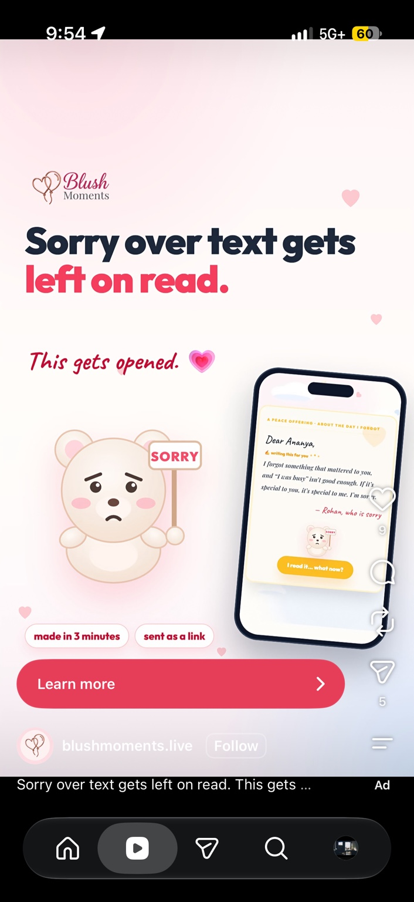
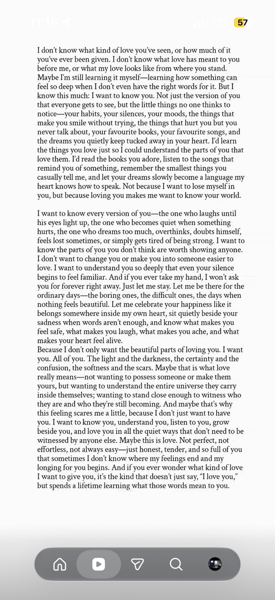
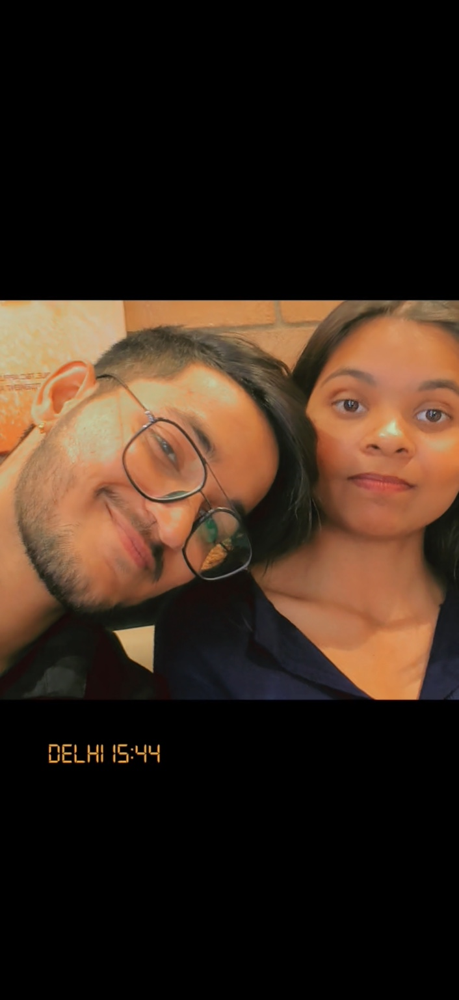
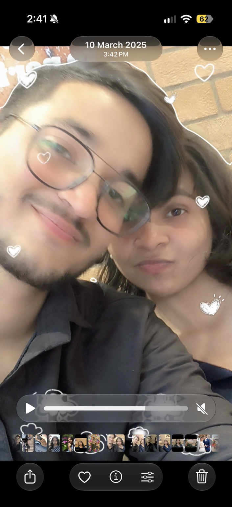

A tiny corner of the internet, just for you
Hey, Manna.
There's something
I want you to know.
Not a perfect speech. Not a way to pressure you.
Just a little piece of my heart, written honestly.
take your time · scroll whenever you're ready ↓
Manna ♡

“I find you in the little things — songs, places, silly moments, and memories that still make me smile.”
— a thought I wanted you to havelittle pieces of us
Some moments feel
like home.
These photos are little reminders of moments I’m grateful we got to share.



Every photo stays on this page — no account, no sign-in, just a link.
Dear Manna,
I’ve been thinking about us, about the things that happened, and about the ways I could have handled things better. I’m sorry for the times I hurt you, for the moments I didn’t understand what you needed, and for any time my actions made you feel less loved or less heard than you deserved.
I know a beautiful page and a few words can’t undo hurt. I don’t want to make excuses or promise things just because I’m scared of losing you. I want to learn from what happened and become better in the ways that actually matter — through patience, honesty, respect, and consistent actions.
I want to know your world more gently: the songs you replay, the little things that make you happy, the dreams you keep to yourself, and even the feelings that are hard to put into words. Not to change you, or to ask you to be someone else, but to understand you better and make space for all of who you are.
I miss the little moments. I’m grateful for the memories we made, and I’ll never want you to feel that you have to respond to this or make a decision before you’re ready. Your feelings matter, even when they’re difficult for me to hear.
If there is ever a chance for us to begin again, I’d want it to be slowly and honestly — not by pretending nothing happened, but by understanding each other better and doing things differently. I can’t ask you to trust words alone. I can only hope my actions, over time, can speak for me.
Whatever you decide, I genuinely wish you peace, happiness, and the kind of love that makes you feel safe and valued. Thank you for the moments you gave me and for being someone who means so much to me.
With love, and with a sincere apology,
Yours, ♡
one last little thing
If we ever begin again,
let it be with care.
I’m not asking you to forget, or to answer right now.
I just wanted you to know what’s in my heart.
You deserve gentleness, Manna. Always.